04
Regard
C'est en partie par la photographie que j'ai développé ma sensibilité au paysage : apprendre à cadrer, à lire la lumière, à observer la nature autrement. Quelques images, sans autre intention que de montrer ce que je regarde.
D'où viennent les photos — cliquer une vignette l'ouvre en grandDe l'Atlantique à l'Adriatique, des Pays-Bas au Maroc

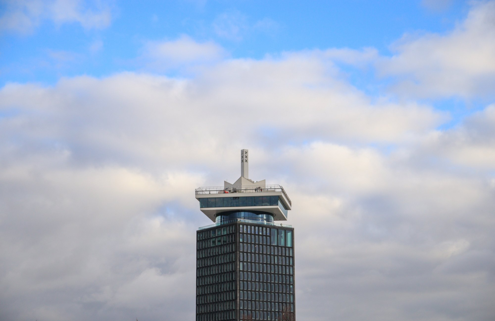
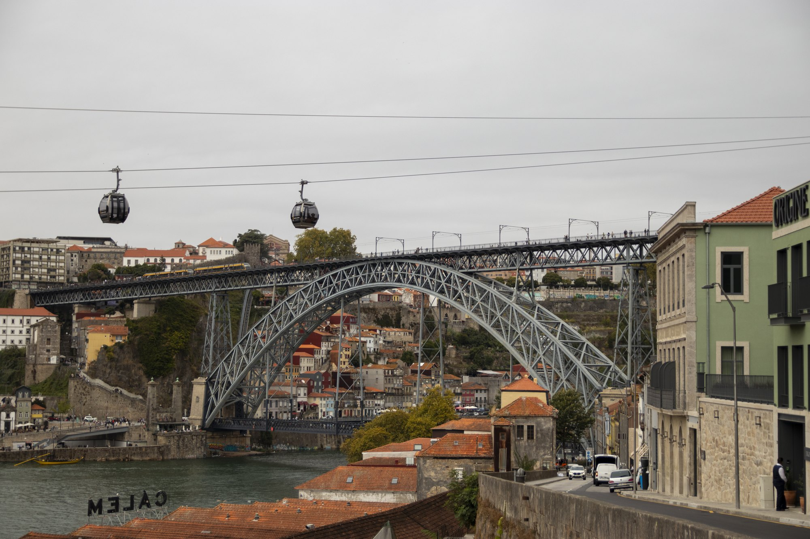
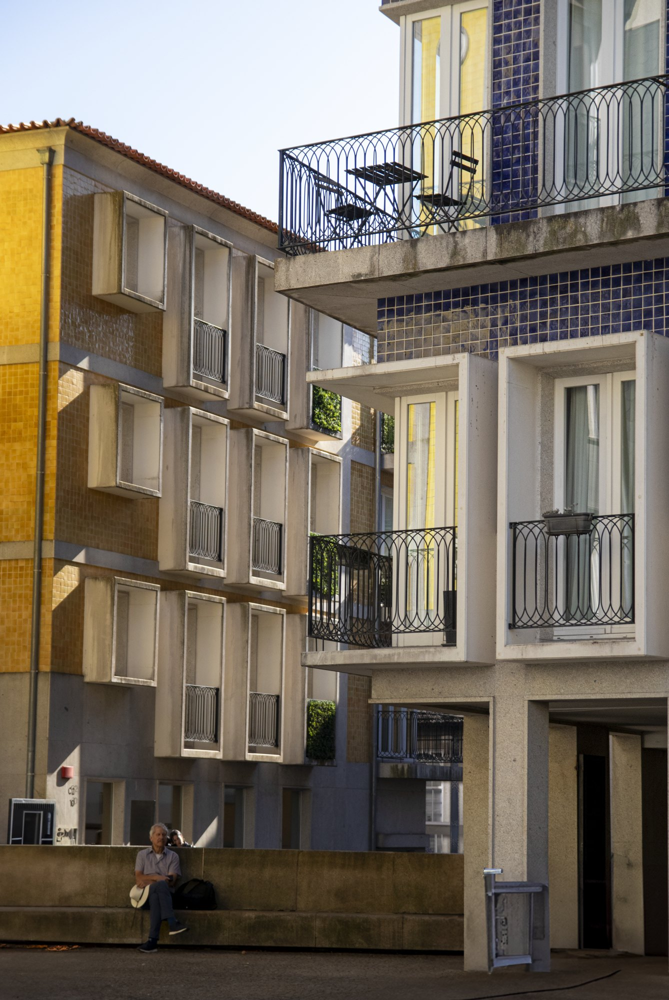
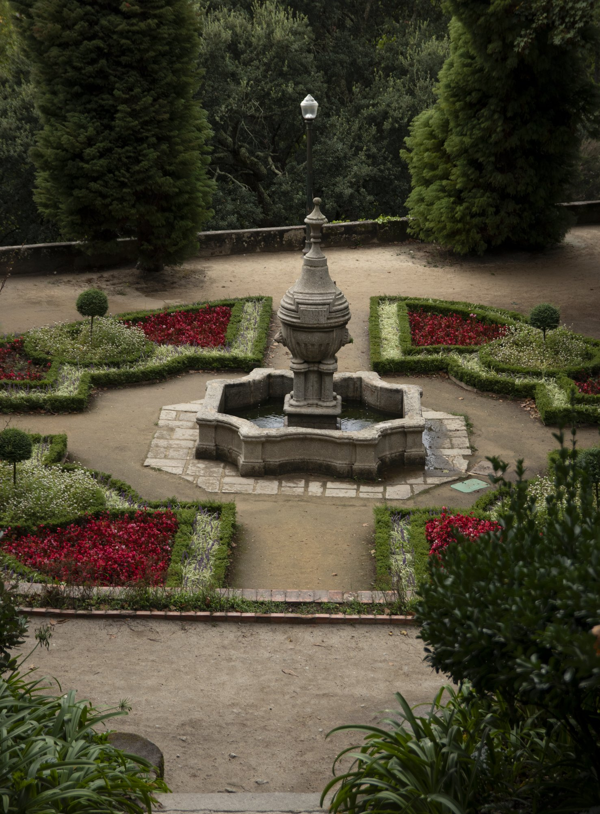
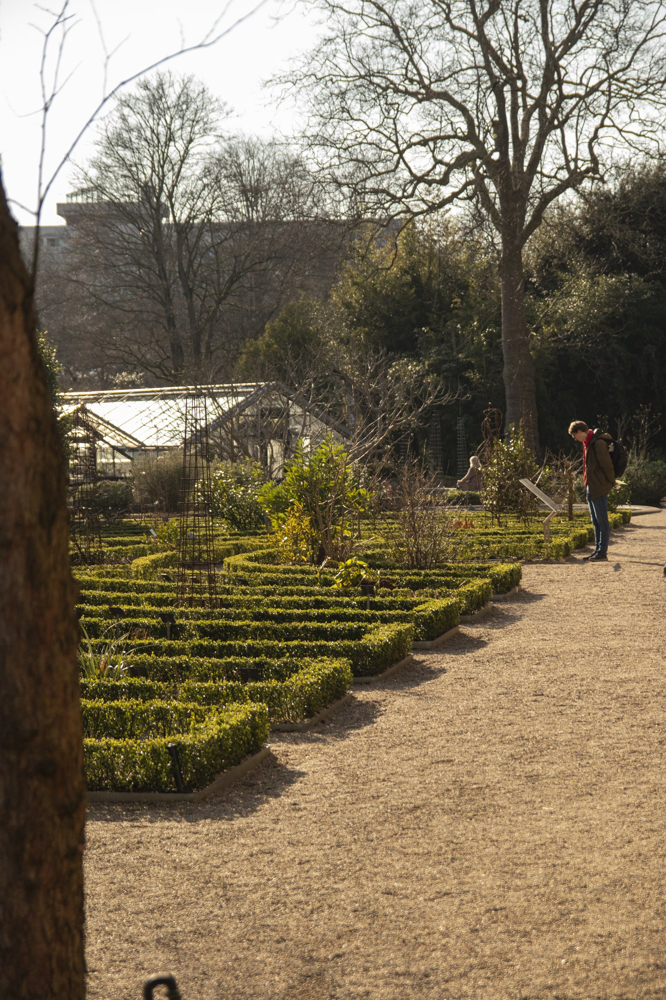
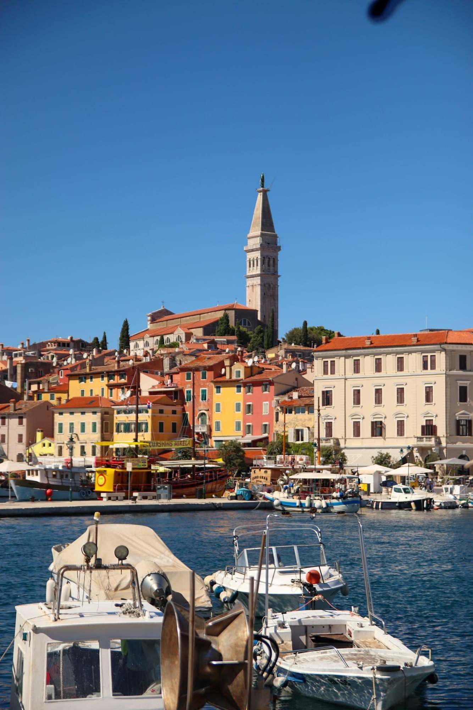
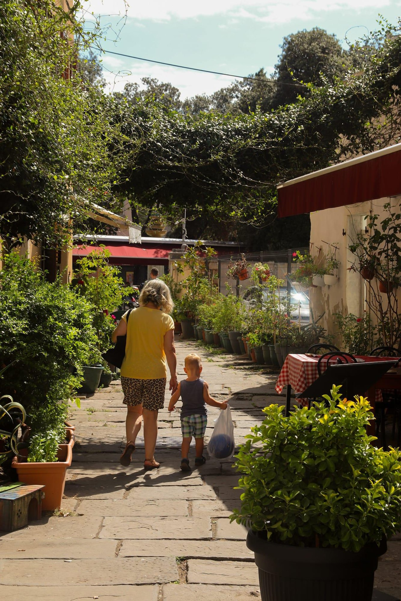
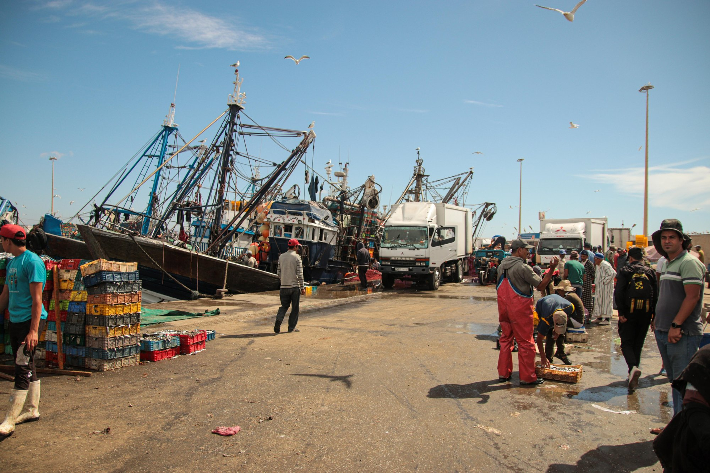
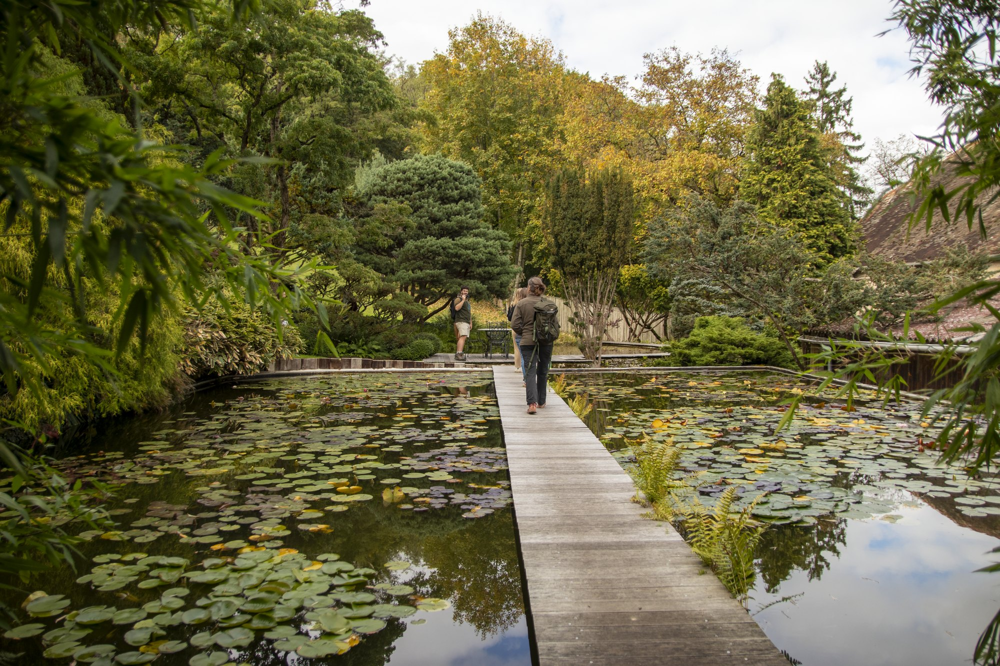
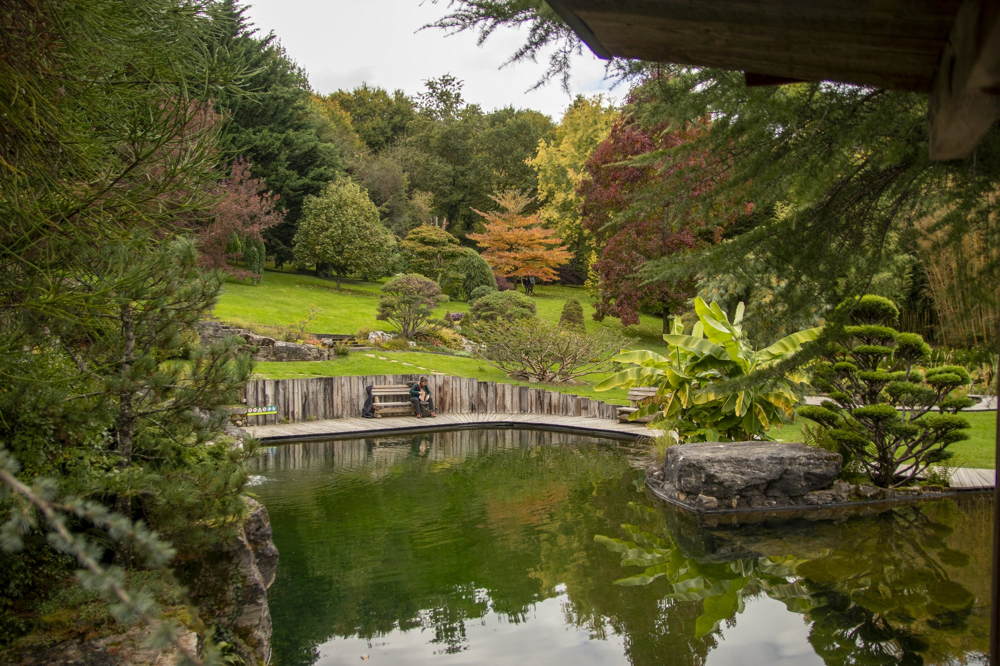
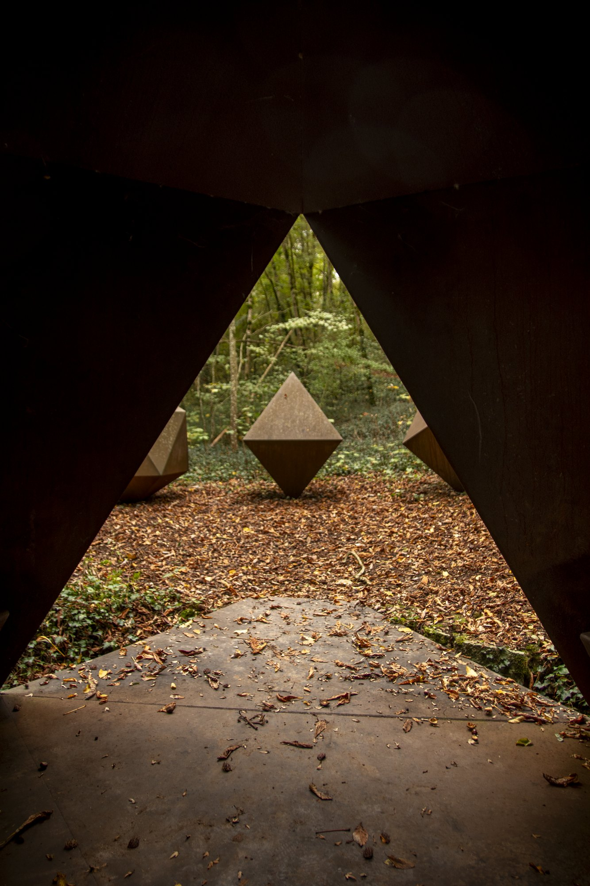
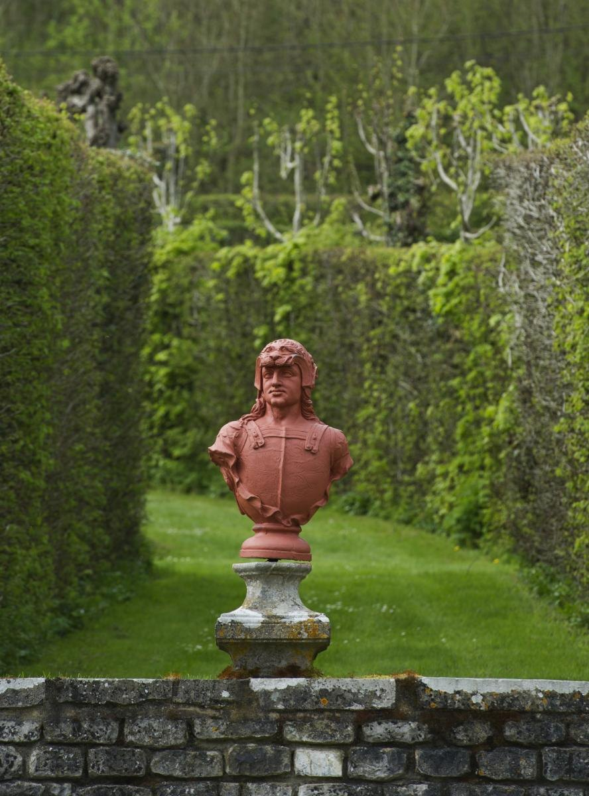
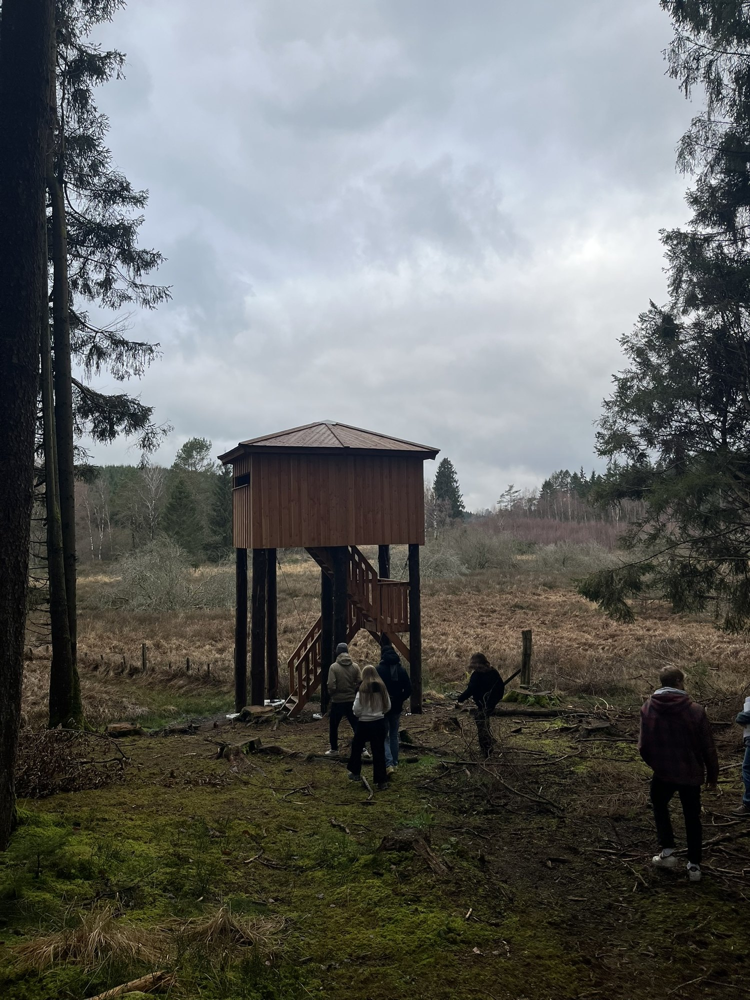
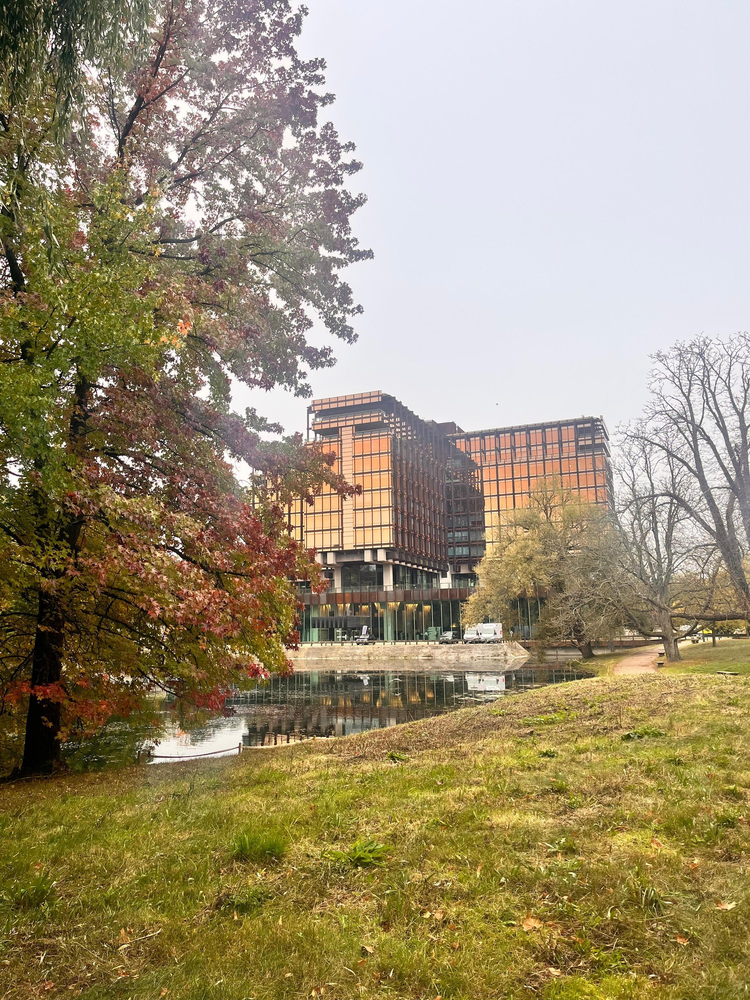
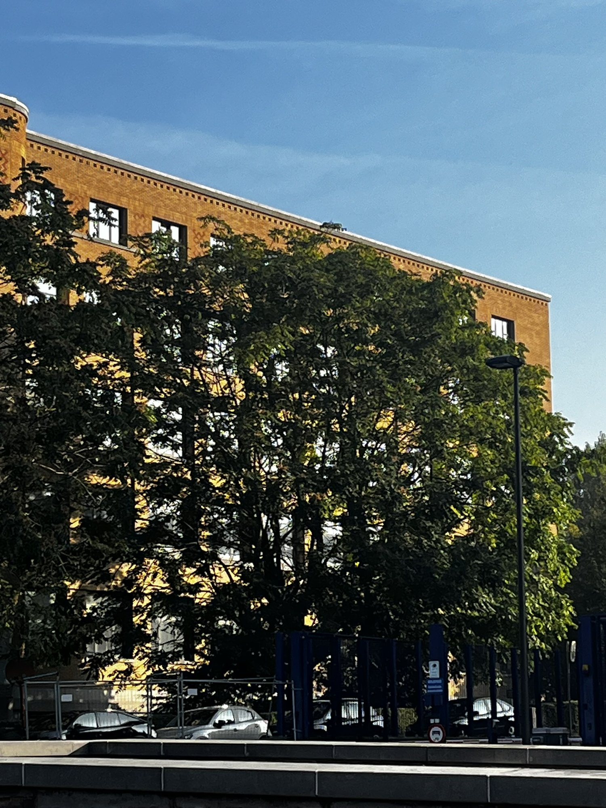